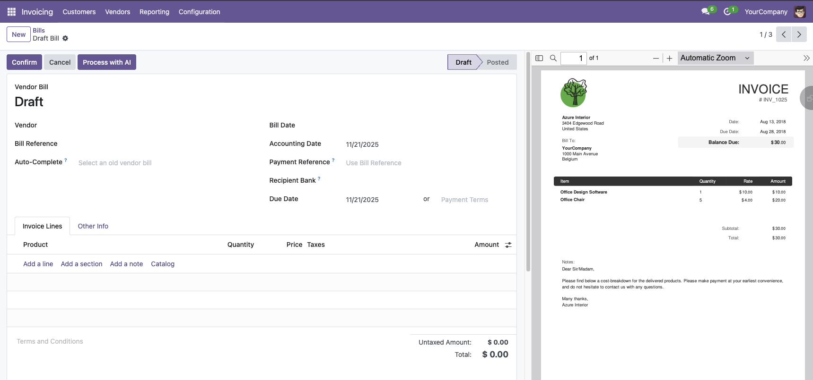

Tus datos van al proveedor de IA que elijas. El documento de la factura se envía al proveedor de IA que configurás; este módulo no envía datos a Serfe ni a ningún servicio fijo.
Instalalo junto con LLM Invoice OCR (AR). El paso de OCR heredado de Apexive busca un proveedor Mistral, que no forma parte de este repositorio. LLM Invoice OCR (AR) lo reemplaza por LiteLLM y agrega el comportamiento argentino. Sin él, o sin un proveedor Mistral propio, la extracción se detiene con un error.
Qué hace
- Process with AI: un botón en los borradores de factura de proveedor que completa el formulario a partir del PDF o la imagen adjunta.
- Respaldo del asistente de importación: cuando la factura no trae XML embebido, el asistente de OCA usa esta extracción.
- Extracción en un solo paso: el texto del OCR va al asistente Invoice Extraction en una única llamada.
- Reconocimiento estándar: el resultado se convierte al Invoice Pivot Format de OCA, así que el reconocimiento de proveedor, producto e impuestos es el habitual.
Qué extrae
- Nombre y número de IVA del proveedor
- Número y referencia de la factura
- Fechas de factura y de vencimiento, y moneda
- Subtotal, impuesto y total
- Líneas con descripción, cantidad, precio unitario y alícuota
Cómo se usa
- Subí un PDF o una imagen a una nueva factura de proveedor, o presioná Process with AI en un borrador.
- O usá Contabilidad → Proveedores → Import Vendor Bill.
- Revisá el resultado: la salida de la IA es una sugerencia, así que verificá totales, impuestos y proveedor antes de publicar.


Qué necesitás
- Odoo 16 Community con los módulos
account_invoice_importde OCA. - Una cuenta con un proveedor de IA y un proxy LiteLLM, ambos provistos y operados por vos. Seguí la documentación de LiteLLM y de tu proveedor para configurarlos.
- En LLM → Configuración, configurá el proveedor LiteLLM y asigná un modelo al asistente Invoice Extraction.